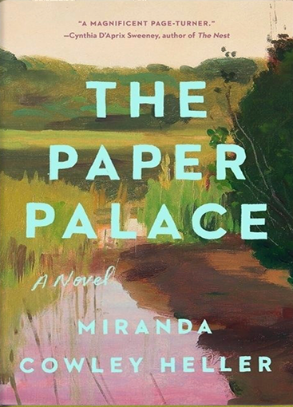

The paper palace

Описание
Дом на берегу озера, где время течёт медленнее, а память пахнет
старой бумагой.
Три поколения семьи Лоу собираются в «Бумажном дворце» — доме, построенном из бумаги,
клея и упрямства их прадеда. Стены здесь
помнят больше, чем люди: каждая трещина — ссора,
каждый слой —
примирение, каждая страница, вклеенная в стену, — чья-то
непрожитая жизнь.
Жанр: магический реализм / семейная сага
Объём: 384 страницы
Аудитория: взрослые, 18+